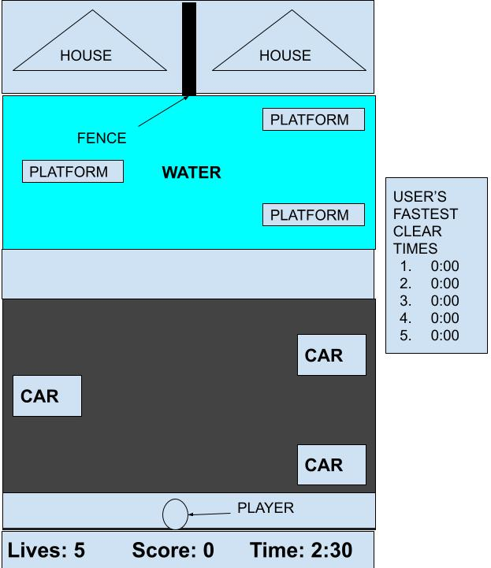

|  | |
Start ScreenThis is the first screen the player will see. This screen will show the player the title of the game and a message to continue to the game. |
Game ScreenThis screen is where the player will actually play. The player will have to avoid the car obstacles and get on the moving platforms in order to reach the homes. This screen will also show the player's current score, lives and the timer. The board on the right of the screen will keep track of the level clear times. |
Transition ScreenAfter the player has successfully cleared the level, they will be moved to this screen. They will then be shown what level they will move on to and a continue message. |
End ScreenIf the player loses all of their lives or runs out of time, they will be moved to this screen. This screen will show the player their score and a message based off their death. |